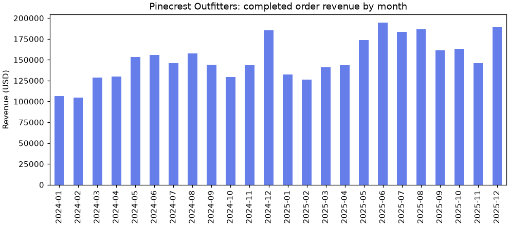

🧰 Lesson 0.1: Your Data Science Toolkit
Set up a working data science environment on your own computer, meet the company whose data you will analyze all course, and run your first real analysis today.
🎯 Learning Objectives
By the end of this lesson, you will be able to:
- Install Python 3.12 or newer and create a virtual environment for the course on Windows, macOS or Linux
- Install the course packages from a
requirements.txtfile and confirm they work - Run code both in a notebook and as a script, and say when each one suits the job
- Download the course data and load a file from it with a relative path
- Read a Python traceback from the bottom up and take a sensible next step when you are stuck
In This Lesson
🗺️ The Map: What You Are Setting Up
By the end of this course you will be able to take a pile of raw files, clean them, explore them, test an idea, and present what you found with charts someone can trust. All of that happens with a small set of tools, and today you put them in place. It takes about an hour, you do it once, and every later lesson starts from here.
💡 Mental Model: A Workshop of Your Own
Python is the building. A virtual environment is one workshop inside it, with its own tool wall: the tools you hang there are for this project only, and nothing you do there disturbs any other room. The packages (NumPy, pandas, Matplotlib and the rest) are the tools. A notebook is the workbench where you try things, and the data folder is the lumber.
🤔 Why This Matters
Most people who give up on data science do not give up on statistics. They give up on installation. A clean, repeatable setup removes the most common source of frustration before it starts, and knowing how your tools fit together means that when something does break, you will know where to look.
✅ Setup Trouble Is Normal
Something in this lesson will probably not work the first time. That is not a sign you are bad at this: it happens to professionals every time they set up a new machine. The Common Mistakes section lists the messages you are most likely to see, with the fix for each.
🐍 Install Python
This course needs Python 3.12 or newer. You may already have it. Open a terminal (on Windows: PowerShell, from the Start menu; on macOS: Terminal; on Linux: your terminal application) and ask.
| System | Command to check | If it is missing or older than 3.12 |
|---|---|---|
| Windows | py --version | Download the installer from python.org and run it. Tick "Add python.exe to PATH" on the first screen. |
| macOS | python3 --version | Download the macOS installer from python.org, or with Homebrew: brew install python@3.12 |
| Linux (Debian, Ubuntu) | python3 --version | sudo apt install python3 python3-venv python3-pip. Ubuntu 24.04 and newer give you 3.12. On an older release that still reports 3.10 or 3.11, install python3.12 and python3.12-venv (for example from the deadsnakes PPA) and type python3.12 wherever this lesson says python3. |
You should see something like this (a higher number is fine):
Output
Python 3.12.14⚠️ Which Word: python, python3 or py?
It depends on your system, and only until the next section. Windows provides py; macOS and Linux provide python3. Once a virtual environment is active, plain python works everywhere and always means "the Python in this environment". From that point on, this course writes python.
🏗️ A Project Folder and a Virtual Environment
Give the course a home. Everything you make will live in one folder, and the lessons assume that folder is where your terminal and your notebooks are working.
1. Create the Folder
The same two commands work in PowerShell, Terminal and Linux shells:
mkdir pinecrest-analysis
cd pinecrest-analysis2. Create the Environment
Python ships with a module called venv that builds virtual environments. This creates one in a folder named .venv inside your project. It takes a few seconds and prints nothing.
Windows (PowerShell)
py -m venv .venvmacOS and Linux
python3 -m venv .venv3. Activate It
Activating tells this terminal window to use the environment's Python and its packages.
Windows (PowerShell)
.venv\Scripts\Activate.ps1macOS and Linux
source .venv/bin/activateYour prompt now starts with (.venv). That prefix is how you know the environment is on.
Your prompt (the folder path will differ)
(.venv) ~/pinecrest-analysis $⚠️ Activation Is Per Terminal Window
Close the terminal and the environment is switched off (nothing is deleted). Each time you open a new terminal for this course, cd into pinecrest-analysis and run the activate command again. Forgetting this is the most common reason for ModuleNotFoundError. To leave an environment on purpose, type deactivate.
Why Bother?
Without an environment, every project on your computer shares one set of packages. The day one project needs a newer pandas and another needs the old one, something breaks. With an environment per project, each has exactly the versions it was built with, and deleting the .venv folder removes everything cleanly. It is also the standard way of working in any professional Python team, so you are building the right habit from day one.
📦 Install the Course Packages
A requirements.txt file lists the packages a project needs, one per line. Download the course's file and save it in your pinecrest-analysis folder:
It begins like this:
# Core analysis
numpy~=2.5.0
pandas~=3.0.0
pyarrow~=25.0
matplotlib~=3.11.0
seaborn~=0.13.2
scipy~=1.18.0
statsmodels~=0.15.0
# Notebooks
jupyterlab~=4.6.0The ~= is a "compatible release" pin. numpy~=2.5.0 means "version 2.5.0 or any later 2.5.x, but not 2.6". You get bug fixes, and you stay on the versions these lessons were tested with, so the output on your screen matches the output on the page.
With your environment active (check for (.venv)), install everything with one command. This downloads a few hundred megabytes, so allow several minutes.
python -m pip install -r requirements.txtThe last line of a successful install begins with Successfully installed followed by a long list of names. You asked for about twenty packages and got many more, because each one brings the packages it depends on.
💡 Why python -m pip and Not Just pip?
A computer can have several copies of pip, one per Python installation. python -m pip means "the pip that belongs to this Python", which, with the environment active, is exactly the one you want. It removes a whole category of "I installed it but Python cannot find it" problems.
Check the Installation
Start Python by typing python, paste these lines, and press Enter. (Type exit() to leave Python afterward.)
import sys
import numpy as np
import pandas as pd
import matplotlib
import scipy
print("Python ", sys.version.split()[0])
print("NumPy ", np.__version__)
print("pandas ", pd.__version__)
print("Matplotlib", matplotlib.__version__)
print("SciPy ", scipy.__version__)Output (your last digits may differ)
Python 3.12.14
NumPy 2.5.4
pandas 3.0.6
Matplotlib 3.11.2
SciPy 1.18.1Five version numbers and no error means your workshop is stocked.
💡 Optional: uv
uv is a newer tool that creates environments and installs packages much faster than venv and pip. If you already use it, uv venv --python 3.12 followed by uv pip install -r requirements.txt gives the same result, and you activate the environment the same way. This course teaches venv and pip because they come with Python and work everywhere.
📓 Notebooks and Scripts
There are two ways to run Python in this course, and you will use both.
Notebook (.ipynb) | Script (.py) | |
|---|---|---|
| How it runs | One cell at a time; results appear under each cell | Top to bottom, all at once: python my_script.py |
| Memory | Variables stay alive between cells until you restart | Starts fresh on every run |
| Best for | Exploring data, trying ideas, charts next to the code | Finished work that must run the same way every time |
| Watch out for | Running cells out of order and getting confused | Re-loading the data on every run while you experiment |
Option A: JupyterLab
JupyterLab was installed with the course packages. Start it from your project folder, with the environment active:
jupyter labYour web browser opens a page showing the files in pinecrest-analysis. Click Python 3 (ipykernel) under "Notebook" to create a notebook. Type code into a cell and press Shift+Enter to run it. To stop JupyterLab, go back to the terminal and press Ctrl+C.
Option B: Visual Studio Code
If you prefer an editor, VS Code runs both notebooks and scripts. Install the Python and Jupyter extensions, then use File → Open Folder to open pinecrest-analysis. When you create a notebook, click Select Kernel at the top right and choose the entry that mentions .venv. For scripts, pick the same interpreter with the command Python: Select Interpreter.
⚠️ The Kernel Must Be Your Environment
A notebook runs on a "kernel", which is simply a Python process. If the kernel is some other Python on your computer, import pandas fails even though you installed it. Starting jupyter lab from the activated environment, or choosing the .venv kernel in VS Code, guarantees they match.
How Code Appears in These Lessons
Every lesson follows the same pattern. Code you should type looks like this, with a Copy button in the corner:
total = 24.50 * 3
print(total)What it printed appears directly underneath in a sand-colored box:
Output
73.5Three conventions are worth knowing now:
- Blocks build on each other. Within a lesson, each code block assumes you ran the ones before it, exactly like cells in a notebook. Work in one notebook per lesson, top to bottom.
- Lessons use
print(). A notebook shows the value of a cell's last line automatically, but only the last line, and a script shows nothing unless you print. Printing works the same in both, so the output you see always matches the page. - Type it, do not only paste it. The copy button is there for long listings. For anything short, typing is how your hands learn the syntax.
🏔️ The Course Data
Every lesson in this course uses data from one company: Pinecrest Outfitters, an outdoor-gear retailer with an online shop and four stores in Boise, Bend, Flagstaff and Asheville. Pinecrest is fictional, and so is every customer, product and number in its files. That means you can dig into customer records freely, and that the data was built to contain real things to find: seasons, trends, messy entries, an experiment, and a few surprises.
⬇️ Download pinecrest-data.zip
Save the zip file into pinecrest-analysis, then unzip it there. Python can do that on any system:
python -m zipfile -e pinecrest-data.zip .The . at the end means "extract here". You now have a data folder, and your project looks like this:
pinecrest-analysis/
├── .venv/ the environment (never edit by hand)
├── data/
│ ├── orders.csv
│ ├── customers.csv
│ ├── ... and the other data files
│ └── README.md describes every file and column
├── pinecrest-data.zip (you may delete this now)
└── requirements.txtConfirm from Python that the files are where the lessons expect them. Start a new notebook called lesson_0_1 and run:
from pathlib import Path
for f in sorted(Path("data").iterdir()):
if f.suffix in {".csv", ".json", ".db", ".xlsx"}:
print(f"{f.name:<20}{f.stat().st_size / 1024:>8,.0f} KB")Output
ab_test.csv 1,218 KB
customers.csv 504 KB
daily_sales.csv 119 KB
order_items.csv 1,320 KB
orders.csv 1,385 KB
orders_messy.csv 1,432 KB
pinecrest.db 3,392 KB
products.csv 30 KB
sales_2025.xlsx 6 KB
store_weather.csv 83 KB
survey.csv 113 KB
web_sessions.json 1,770 KB| Files | What they hold | First used in |
|---|---|---|
products, customers, orders, order_items | The core business tables for 2024 and 2025 | Today, then Module 2 |
orders_messy.csv | The same orders, damaged on purpose | Cleaning Data |
daily_sales.csv, store_weather.csv | One row per store per day | Module 1, Time Series |
survey.csv, ab_test.csv | A customer survey and a checkout-page experiment | Module 4 |
pinecrest.db | A SQLite database of the core tables | Module 5 |
web_sessions.json, sales_2025.xlsx | Nested website sessions; an Excel workbook | Loading Data |
💡 Relative Paths
"data/orders.csv" is a relative path: it means "the data folder inside wherever Python is currently working". That is why it matters that you start JupyterLab, or run scripts, from inside pinecrest-analysis. Forward slashes work on Windows too, so the same line of code runs on every system.
👀 A First Look at the Orders
Time to open a real file. pandas is the library for working with tables of data, and Module 2 teaches it properly. Today you only need three of its moves. Do not worry about understanding every detail: the goal is to see your environment do real work.
import pandas as pd
pd.set_option("display.width", 150) # let wide tables use the full line
pd.set_option("display.max_columns", 20)
orders = pd.read_csv("data/orders.csv", parse_dates=["order_date"])
print(orders.shape)
print(orders.head())Output
(20302, 11)
order_id customer_id order_date channel store status payment_method promo_code discount_pct shipping_cost order_total
0 100001 12673 2024-01-01 store Flagstaff completed cash NaN 0 0.00 434.90
1 100002 10034 2024-01-01 store Asheville completed card NaN 0 0.00 278.90
2 100003 12448 2024-01-01 online Online completed card NaN 0 14.95 75.90
3 100004 11046 2024-01-01 online Online completed digital_wallet NaN 0 0.00 399.80
4 100005 10913 2024-01-01 online Online completed card WELCOME10 10 6.95 26.71One line read 20,302 orders into a table that pandas calls a DataFrame. .shape says it has 20,302 rows and 11 columns, and .head() shows the first five rows. NaN in the promo_code column means "no value": most orders did not use a promo code.
print(orders["order_total"].describe())Output
count 20302.000000
mean 194.596663
std 178.760964
min 6.380000
25% 78.850000
50% 146.850000
75% 264.950000
max 4893.000000
Name: order_total, dtype: float64Square brackets with a column name select one column, and .describe() summarizes it. The average order is about $195, but half of all orders are under $146.85 (the 50% row), and one order is $4,893. Already there is a question worth asking: what is that order? You will find out in the exercises. Noticing things like this, and wanting to know why, is the core skill of this whole course.
🧭 Getting Unstuck
You will get stuck. Everyone does, daily, at every level of experience. What changes with practice is not how often it happens but how quickly you recover. Here is the routine.
1. Read the Traceback from the Bottom
When Python hits an error it prints a traceback: the chain of calls that led to the problem. It can be long and alarming. Here is a real one, produced by a script that asked for "orders.csv" instead of "data/orders.csv":
Traceback (the folder names on your computer will differ)
Traceback (most recent call last):
File "/home/you/pinecrest-analysis/bad.py", line 3, in <module>
orders = pd.read_csv("orders.csv")
^^^^^^^^^^^^^^^^^^^^^^^^^
File "/home/you/pinecrest-analysis/.venv/lib/python3.12/site-packages/pandas/io/parsers/readers.py", line 872, in read_csv
return _read(filepath_or_buffer, kwds)
^^^^^^^^^^^^^^^^^^^^^^^^^^^^^^^
...
File "/home/you/pinecrest-analysis/.venv/lib/python3.12/site-packages/pandas/io/common.py", line 930, in get_handle
handle = open(
^^^^^
FileNotFoundError: [Errno 2] No such file or directory: 'orders.csv'Read it in this order:
- The last line first. It names the kind of error and gives the message:
FileNotFoundError, no such file,'orders.csv'. Very often that is all you need. - Then find your own file. Scan upward for a path that is your code, not something inside
site-packages. Here it isbad.py, line 3. That is where to look. - Ignore the middle. The lines inside pandas show how the library got there. They are rarely where the mistake is.
2. Check the Usual Suspects
- Spelling and capitals.
ordersis notOrders, andorder_dateis notOrder Date. - What is this thing, actually?
print(type(x)),print(x.shape)andprint(x.head())settle most arguments between you and your code. - Did the earlier cell run? In a notebook, restart the kernel and run everything from the top. If the error disappears, cells were run out of order.
3. Ask the Documentation
Python can describe its own tools. This works anywhere:
help(len)Output
Help on built-in function len in module builtins:
len(obj, /)
Return the number of items in a container.
In a notebook, typing a name followed by a question mark (pd.read_csv?) opens the same help in a panel. For more depth, each library has official documentation with a user guide and an API reference: search for "pandas documentation read_csv" and prefer results from the project's own site.
4. Search Well, Then Ask Well
- Search for the last line of the traceback with anything specific to your computer removed, plus the library name: pandas FileNotFoundError No such file or directory.
- If you ask a person or an AI assistant, include three things: what you ran, the full error, and what you expected. Shrink the problem to the smallest code that still fails. Writing that small example solves the problem surprisingly often.
- Whatever answer you get, run it and check it against the data. An answer that sounds confident is not the same as an answer that is correct.
⚠️ Common Mistakes
These are the messages nearly everyone meets in the first week. Each one is feedback, not a verdict: it tells you exactly which assumption to check.
1. The Environment Is Not Active
import pandazError
ModuleNotFoundError: No module named 'pandaz'This example misspells the name on purpose so you can see the message. With the correct spelling, No module named 'pandas' means the Python that is running cannot see the package. Fix: look for (.venv) in your prompt. If it is missing, activate the environment. In a notebook, check that the kernel is the .venv one. If the environment is active and the module really is missing, run python -m pip install -r requirements.txt again.
2. Python Is Working in a Different Folder
orders = pd.read_csv("orders.csv")Error
FileNotFoundError: [Errno 2] No such file or directory: 'orders.csv'The file exists, but not at the path you gave. Either the path is incomplete (it should be "data/orders.csv") or Python is running from another folder. Fix: ask Python where it is.
from pathlib import Path
print(Path.cwd().name) # the folder Python is working in
print(Path("data/orders.csv").exists()) # can it see the file?Output (your folder should be pinecrest-analysis; the name here will differ)
pinecrest-analysis
TrueIf the second line prints False, close JupyterLab, cd into your project folder in the terminal, and start it again from there.
3. A Column Name That Is Almost Right
orders["Order Date"]Error
KeyError: 'Order Date'A KeyError from a DataFrame means "there is no column with exactly this name". The column is order_date. Fix: print(orders.columns) and copy the name from there.
4. A Variable That Does Not Exist (Yet)
print(ordres.shape)Error
NameError: name 'ordres' is not definedEither a typo, as here, or the cell that creates the variable has not been run since the kernel started. In a full traceback Python often adds a helpful guess: Did you mean: 'orders'?
5. PowerShell Refuses to Activate (Windows)
If .venv\Scripts\Activate.ps1 answers that "running scripts is disabled on this system", Windows is blocking all PowerShell scripts by default. Fix: run this once, answer Y, then activate again. It allows scripts you created yourself to run, for your user account only.
Set-ExecutionPolicy -Scope CurrentUser RemoteSigned🛠️ Project: First Look at Pinecrest
You will write a script, first_look.py, that answers the first questions anyone asks about a sales file: how many orders, over what period, how much money, and how it changed over time. It ends by saving a chart. Build it in a notebook one step at a time, then assemble the script. Allow about 30 minutes.
🛠️ Step 1: Load and measure (5 min)
In a notebook, load the orders and print how many there are and the dates they span. .min() and .max() work on a date column just as they do on numbers.
import pandas as pd
orders = pd.read_csv("data/orders.csv", parse_dates=["order_date"])
print("Orders:", len(orders))
print("First order:", orders["order_date"].min().date())
print("Last order: ", orders["order_date"].max().date())Output
Orders: 20302
First order: 2024-01-01
Last order: 2025-12-31🛠️ Step 2: Count the categories (5 min)
.value_counts() counts how often each value appears in a column. Use it on channel and status.
print(orders["channel"].value_counts())
print()
print(orders["status"].value_counts())Output
channel
online 12854
store 7448
Name: count, dtype: int64
status
completed 18762
returned 1143
cancelled 397
Name: count, dtype: int64Not every order is revenue: 1,143 were returned and 397 cancelled. An analyst who adds up every row would overstate sales.
🛠️ Step 3: Total the completed orders (5 min)
Keep only the rows whose status is "completed", then total and average them. The expression inside the brackets is a filter; Lesson 2.1 explains exactly how it works.
completed = orders[orders["status"] == "completed"]
print(f"Completed revenue: ${completed['order_total'].sum():,.2f}")
print(f"Average completed order: ${completed['order_total'].mean():.2f}")Output
Completed revenue: $3,624,306.27
Average completed order: $193.17🛠️ Step 4: Revenue by month (5 min)
Group the completed orders by the month of their date and total each group. .dt.to_period("M") turns a date like 2024-03-17 into the month 2024-03.
month = completed["order_date"].dt.to_period("M")
monthly = completed.groupby(month)["order_total"].sum()
print(monthly.head(3))
print("Best month: ", monthly.idxmax(), f"${monthly.max():,.2f}")
print("Slowest month:", monthly.idxmin(), f"${monthly.min():,.2f}")Output
order_date
2024-01 106287.63
2024-02 104687.91
2024-03 128400.63
Freq: M, Name: order_total, dtype: float64
Best month: 2025-06 $194,875.60
Slowest month: 2024-02 $104,687.91🛠️ Step 5: Draw and save a chart (5 min)
Matplotlib draws the picture. plt.subplots() creates a figure and one set of axes, pandas draws the bars onto those axes, and savefig writes a PNG file into your project folder. In a notebook the chart also appears under the cell.
import matplotlib.pyplot as plt
fig, ax = plt.subplots(figsize=(9, 4), layout="constrained")
monthly.plot.bar(ax=ax, color="#667eea")
ax.set_title("Pinecrest Outfitters: completed order revenue by month")
ax.set_xlabel("")
ax.set_ylabel("Revenue (USD)")
fig.savefig("monthly_revenue.png", dpi=110)
print("Saved monthly_revenue.png")Output
Saved monthly_revenue.png
🛠️ Step 6: Assemble the script (5 min)
A notebook is where you worked it out. A script is how you keep it. Create a file named first_look.py in your project folder containing the complete program below, then run it from the terminal with python first_look.py.
"""First look at Pinecrest Outfitters orders: a summary and a chart."""
import matplotlib.pyplot as plt
import pandas as pd
orders = pd.read_csv("data/orders.csv", parse_dates=["order_date"])
print("Orders:", len(orders))
print("Period:", orders["order_date"].min().date(), "to", orders["order_date"].max().date())
print()
print(orders["channel"].value_counts())
print()
print(orders["status"].value_counts())
print()
completed = orders[orders["status"] == "completed"]
print(f"Completed revenue: ${completed['order_total'].sum():,.2f}")
print(f"Average completed order: ${completed['order_total'].mean():.2f}")
month = completed["order_date"].dt.to_period("M")
monthly = completed.groupby(month)["order_total"].sum()
print("Best month: ", monthly.idxmax(), f"${monthly.max():,.2f}")
print("Slowest month:", monthly.idxmin(), f"${monthly.min():,.2f}")
fig, ax = plt.subplots(figsize=(9, 4), layout="constrained")
monthly.plot.bar(ax=ax, color="#667eea")
ax.set_title("Pinecrest Outfitters: completed order revenue by month")
ax.set_xlabel("")
ax.set_ylabel("Revenue (USD)")
fig.savefig("monthly_revenue.png", dpi=110)
print("Saved monthly_revenue.png")Output
Orders: 20302
Period: 2024-01-01 to 2025-12-31
channel
online 12854
store 7448
Name: count, dtype: int64
status
completed 18762
returned 1143
cancelled 397
Name: count, dtype: int64
Completed revenue: $3,624,306.27
Average completed order: $193.17
Best month: 2025-06 $194,875.60
Slowest month: 2024-02 $104,687.91
Saved monthly_revenue.png✅ Project Completion Checklist
- Your prompt shows
(.venv)and the version check prints five version numbers python first_look.pyruns from the terminal with no error- It reports 20,302 orders from 2024-01-01 to 2025-12-31
- Completed revenue is $3,624,306.27 and the best month is 2025-06
monthly_revenue.pngexists in your project folder and shows 24 bars- You can explain, in a sentence, why returned and cancelled orders were left out of revenue
🏋️ Hands-on Exercises
These use only what you saw today: read_csv, selecting a column, value_counts(), and filtering rows.
🏋️ Exercise 1: Where Do the Orders Come From?
Count the orders for each value of the store column. Which physical store has the most orders in this file, and which has the fewest?
💡 Hint
It is one line, and you used the same method on channel in the project.
✅ Solution
print(orders["store"].value_counts())Output
store
Online 12854
Boise 2594
Bend 1725
Flagstaff 1716
Asheville 1413
Name: count, dtype: int64Boise has the most and Asheville the fewest. One caution, straight from data/README.md: this file holds online orders plus store purchases made by customers who signed in with an account. Walk-in sales are in daily_sales.csv. Knowing what a file does not contain is part of reading it.
🏋️ Exercise 2: How Often Are Promo Codes Used?
Count how many orders used each promo code. Then work out what percentage of all orders used any code. .notna() gives True where a value is present, and the mean of a True/False column is the fraction that is True.
💡 Hint
value_counts() ignores missing values by default, which is exactly what you want for the first part. For the second: orders["promo_code"].notna().mean().
✅ Solution
print(orders["promo_code"].value_counts())
used = orders["promo_code"].notna()
print(used.sum(), "orders used a code:", round(used.mean() * 100, 1), "percent")Output
promo_code
WELCOME10 1139
GEARUP5 396
TRAIL15 359
SUMMIT20 254
Name: count, dtype: int64
2148 orders used a code: 10.6 percent🏋️ Exercise 3: Investigate the Largest Order
describe() showed one order of $4,893. Find that row and print all of its columns. Is it an error? Write down what you would want to check before deciding.
💡 Hint
Filter the rows the same way you filtered for completed orders, but compare order_total with its own maximum.
✅ Solution
biggest = orders[orders["order_total"] == orders["order_total"].max()]
print(biggest.T)Output
6478
order_id 106479
customer_id 12681
order_date 2024-09-15 00:00:00
channel online
store Online
status completed
payment_method card
promo_code NaN
discount_pct 0
shipping_cost 0.0
order_total 4893.0.T flips the table on its side, which is easier to read for a single row. Nothing here looks broken: it is a completed online order, paid by card. To know more you would look up order 106479 in order_items.csv, which you will learn to do in Module 2. (It is a bulk purchase of one product.) The habit to build: an unusual value is a question, not automatically a mistake.
🏋️ Exercise 4: Break It on Purpose (Stretch)
Deliberately cause each of these errors in your notebook, one at a time. For each, read the last line of the traceback, then find the line number of your own code in it. Record the three messages in your journal.
- Load a file that does not exist:
pd.read_csv("data/order.csv") - Ask for a column that does not exist:
orders["total"] - Leave off a closing parenthesis:
print(orders.head()
✅ Solution
The first two are the errors from Common Mistakes with different names in the message: FileNotFoundError: [Errno 2] No such file or directory: 'data/order.csv' and KeyError: 'total'. The third is a different kind of error:
exec("print(orders.head()")Error
SyntaxError: '(' was never closed (<string>, line 1)(The solution wraps the broken line in exec() only so that this page's code can be tested automatically. In your notebook the message is the same, with your cell and line number in place of <string>, line 1.) A SyntaxError is reported before any of your code runs, because Python could not even read it. Causing errors on purpose, in a calm moment, makes them far less alarming when they happen by accident.
🎯 Quick Quiz
🎯 Check Your Understanding
Question 1: Yesterday everything worked. Today you open a new terminal, go to your project folder, run python first_look.py, and get ModuleNotFoundError: No module named 'pandas'. What is the most likely cause?
Question 2: A traceback fills your screen with thirty lines. Where should you look first?
Question 3: In a requirements file, what does pandas~=3.0.0 allow pip to install?
Question 4: The file orders.csv is definitely inside your data folder, yet pd.read_csv("data/orders.csv") raises FileNotFoundError in a notebook. What should you check?
Question 5: You want to try several ways of charting a dataset, looking at each result before deciding on the next step. Which fits best, and why?
❓ Common Questions at This Stage
Can I use Anaconda, Google Colab or another setup I already have?
Yes, as long as you end up with Python 3.12 or newer and the package versions in requirements.txt. The lessons were tested with those versions, and some behavior, especially in pandas, differs in older releases. If your output does not match the page, compare version numbers first. In a hosted notebook service you will also need to upload the data folder.
Do I have to redo this setup for every lesson?
No. You install once. What you repeat is small: open a terminal, cd pinecrest-analysis, activate the environment, and start JupyterLab or VS Code. After a week it takes ten seconds.
Something went badly wrong with my environment. How do I start over?
Delete the .venv folder, then repeat three commands: create the environment, activate it, and install from requirements.txt. Your notebooks, scripts and data are not inside .venv, so nothing of yours is lost. Being this easy to rebuild is one of the best things about environments.
pip says it cannot find a version that satisfies a requirement. What now?
First check python --version: these package versions need Python 3.12 or newer. If your Python is much newer than the course, a pinned version may not have been built for it. In that case remove the ~=... part from the line pip complained about, so it reads just the package name, and install again. Make a note in your journal that your version differs.
Is the Pinecrest data real?
No. It is generated by a program, data/make_data.py, which is included in the zip file. It was designed to behave like real retail data, including its flaws, so the techniques you learn transfer directly. Because it is fictional, you never have to worry about anyone's privacy while you practice.
🌟 Going Further: Bonus Challenge
Open data/README.md and read the description of daily_sales.csv. Then extend first_look.py: load that file as well, and print each store's total revenue for the two years using groupby("store")["revenue"].sum(). Compare the four store totals with the completed revenue you found in orders.csv. Why are the store numbers so much larger? The README has the answer, and working it out teaches the most important question in data analysis: what, exactly, does one row of this file represent?
📓 Learning Journal
Every lesson in this course ends with a few minutes of writing. It is not busywork. Explaining an idea in your own words is one of the most reliable ways to find out whether you understand it, and a journal gives you a record of how far you have come on the days it does not feel like far.
Set it up now: create a plain text file called journal.md in your pinecrest-analysis folder (a paper notebook works just as well). Start each entry with the date and the lesson number. Nobody grades it. Write for the version of you who will be stuck on something similar in three months.
For each lesson, jot down:
- Key concepts you learned today
- Techniques that clicked (and the ones that have not, yet)
- Questions or confusion to come back to
- Ideas to try on your own
- Progress and feelings: how did this lesson go for you?
✍️ This lesson's prompt: Describe, in your own words, what a virtual environment is and what would go wrong without one. Then write down the exact commands you need each time you sit down to work on this course on your computer. Finally: what is one question about Pinecrest's sales you would like to be able to answer by the end of the course?
📝 Lesson Summary
🎓 Key Takeaways
- A virtual environment gives one project its own Python packages; activate it in every new terminal and look for
(.venv) python -m pip install -r requirements.txtinstalls a project's packages, and~=pins keep you on tested versions- Notebooks are for exploring, scripts are for finished work that must run the same way every time
- Lesson code blocks build on each other, and the sand-colored box under each one is its real output
"data/orders.csv"is a relative path: it depends on the folder Python is working in- Read a traceback from the bottom: error type and message first, then the line in your own file
- An unusual value is a question to investigate, not automatically an error
🏆 What You've Accomplished
- You built a complete, isolated data science environment that you can rebuild from one file
- You ran Python both in a notebook and as a script
- You loaded 20,302 real-looking orders, summarized them, and found the best and slowest months
- You made and saved your first chart, and it already shows growth and seasonality
- You met the five most common beginner errors on purpose, which is the best way to meet them
🔭 Looking Ahead
In Lesson 1.1: Arrays vs Lists you go underneath pandas to the structure everything in this course is built on: the NumPy array. You will see why a column of numbers needs a different container from a Python list, measure the difference in memory and speed yourself, and learn to index, slice and copy arrays.
📋 Before the Next Lesson
- Close your terminal, open a new one, and get back to a working
(.venv)prompt without looking at this page. Check your journal if you need to. - Skim
data/README.mdso you know what files exist. You do not need to remember the details. - Open
data/daily_sales.csvin a text editor or spreadsheet and look at the first few rows. Lesson 1.1 starts there.
🌱 Encouragement for the Journey
The hardest hour of this course may be the one you just finished. Installing tools is fiddly, unglamorous, and different on every computer, and you got through it. Everything from here is the interesting part: asking questions of data and learning how to get honest answers. You already asked your first one today, about a $4,893 order. Keep that curiosity. It matters more than any single technique you will learn.